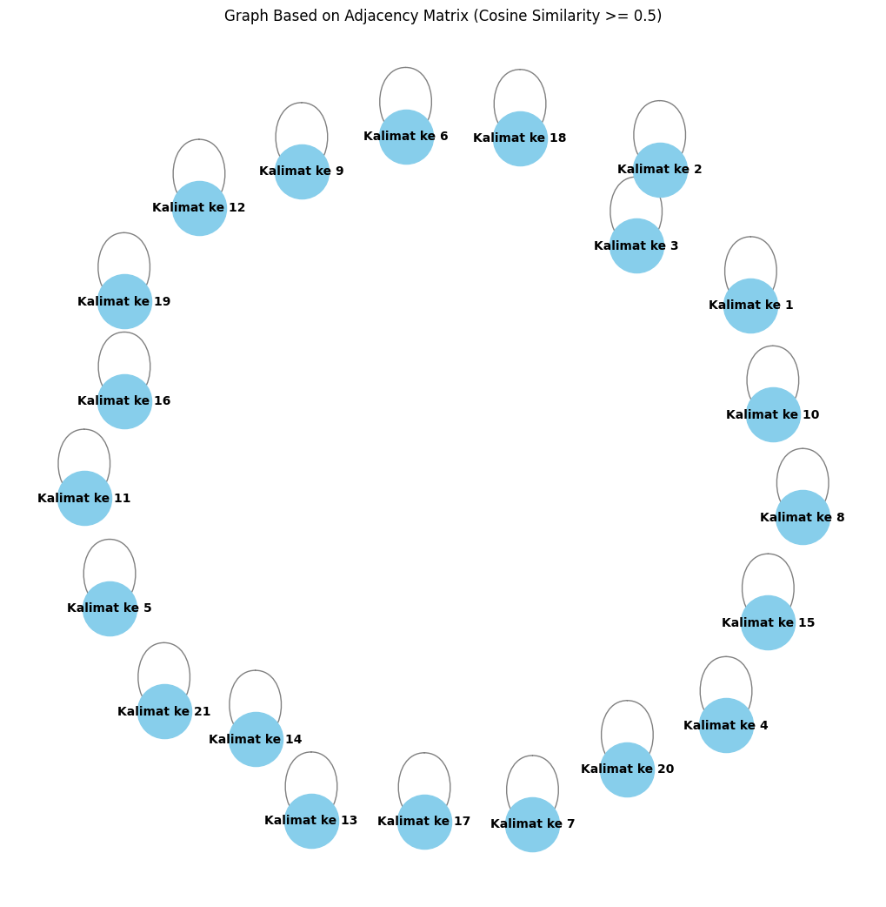

Tugas 4 - Graph#
from google.colab import drive
drive.mount('/content/drive')
Mounted at /content/drive
# Install dan import modul yang diperlukan
!pip install Sastrawi
import nltk
# Pastikan untuk mengunduh 'punkt' yang dibutuhkan NLTK
nltk.download('punkt')
# Import library lain yang dibutuhkan
import pandas as pd
import numpy as np
import re
from nltk.corpus import stopwords
from Sastrawi.Stemmer.StemmerFactory import StemmerFactory
from sklearn.feature_extraction.text import TfidfVectorizer
from sklearn.metrics.pairwise import cosine_similarity
import networkx as nx
import matplotlib.pyplot as plt
# ...lanjutkan dengan kode lainnya
Collecting Sastrawi
Downloading Sastrawi-1.0.1-py2.py3-none-any.whl.metadata (909 bytes)
Downloading Sastrawi-1.0.1-py2.py3-none-any.whl (209 kB)
?25l ━━━━━━━━━━━━━━━━━━━━━━━━━━━━━━━━━━━━━━━━ 0.0/209.7 kB ? eta -:--:--
━━━━━━━━━━━━━━━━━━━━━━━━━━━━━━━━━━━━━━━━ 209.7/209.7 kB 6.7 MB/s eta 0:00:00
?25hInstalling collected packages: Sastrawi
Successfully installed Sastrawi-1.0.1
[nltk_data] Downloading package punkt to /root/nltk_data...
[nltk_data] Unzipping tokenizers/punkt.zip.
# Baca file CSV
df = pd.read_csv("/content/drive/MyDrive/PPW-A/report/Tugas-PPW-A/data_berita_detik.csv")
df.head()
| judul | tanggal | isi | kategori | |
|---|---|---|---|---|
| 0 | Media Golf Day Dahulu, BNI Indonesian Masters ... | Kamis, 17 Okt 2024 02:02 WIB | Jakarta - Turnamen golf BNI Indonesian Masters... | Olahraga |
| 1 | Denmark Open 2024: Ahsan/Hendra Takluk dari Je... | Kamis, 17 Okt 2024 00:22 WIB | Odense - Mohammad Ahsan/Hendra Setiawan tersin... | Olahraga |
| 2 | Denmark Open 2024: Ginting Tersingkir di Babak... | Rabu, 16 Okt 2024 22:42 WIB | Odense - Anthony Sinisuka Ginting tersingkir d... | Olahraga |
| 3 | Denmark Open 2024: Rinov/Pitha Tundukkan Wakil... | Rabu, 16 Okt 2024 22:15 WIB | Odense - Rinov Rivaldy/Pitha Haningtyas Mentar... | Olahraga |
| 4 | Umar Abdullah Wakili Indonesia di FIA Motorspo... | Rabu, 16 Okt 2024 22:15 WIB | Jakarta - Bakal ada pebalap Indonesia tampil d... | Olahraga |
# mengambil satu sample berita
sample_berita = df['isi'].iloc[4]
print(sample_berita)
Jakarta - Bakal ada pebalap Indonesia tampil di Eropa akhir bulan ini. Dia adalah Umar Abdullah yang turun di FIA Motorsport Games 2024 Valencia. Ajang tersebut digelar di Valencia, 23-27 Oktobeer. Umar yang merupakan pebalap Delta Garage Racing Team ditunjuk oleh Waketum IMI Pusat bidang Olahraga Mobil Ananda Mikola. FIA Motorsport layaknya Olimpiade karena mempertandingkan banyak cabang olahraga motor. Umar akan menggunakan mobil spesifikasi TCR dari merk yang bukan biasa dipakainya di ajang balapan. Dia sudah menyiapkan wear pack (baju balap) dengan dominasi warna merah-putih dipadukan dengan hitam. " Iya, kayak Olimpiade. Tapi ini khusus balap, di bawah FIA. Dari olahraga balap roda empat hanya saya, sama ada satu lagi dari gokart," ungkap Umar dalam rilis kepada detikSport. "Kayak TCR World. Perwakilan peserta dari seluruh dunia yang memiliki pembalap TCR," lanjutnya. Untuk persiapan menuju FIA Motorsport Games 2024, Umar sampai harus berangkat ke Milan, Italia, akhir pekan ini. demi melakukan latihan sim racing di JAS Motorsport. "Insyaallah, Minggu (20/10/2024), saya berangkat ke Milan. Selasa malam ke Valencia, Rabu opening Ceremony," terang pria yang juga yang berprofesi sebagai lawyer. Umar akan didampingi Keneth (manajer Delta Garage RT di TCR Asia Series),Ananda Bule (pereli Delta Garage RT), dan Ficky Fernando (pembalap ISSOM Delta Garage RT). Lalu, apakah target Umar di ajang tersebut? "Soal target nanti dulu, kita mesti lihat dulu, kayak apa nih mainnya. Dan berapa banyak pebalap, dari mana saja. Nanti setelah practice, baru berani ngomong deh hehe," pungkas Umar. (mrp/ran)
# Membuat list untuk menyimpan hasil
result_list = []
# Pisahkan kalimat berdasarkan titik
sentences = sample_berita.split('.') # Pisahkan kalimat berdasarkan titik
sentences = [s.strip() for s in sentences if s.strip()] # Hilangkan spasi berlebih dan kosong
# Looping untuk menambahkan setiap kalimat ke result_list
for i, sentence in enumerate(sentences, 1):
result_list.append({'kalimat ke n': f"Kalimat ke {i}", 'kalimat': sentence})
# Membuat DataFrame dari hasil pemisahan
result_df = pd.DataFrame(result_list)
# Tampilkan DataFrame
result_df
| kalimat ke n | kalimat | |
|---|---|---|
| 0 | Kalimat ke 1 | Jakarta - Bakal ada pebalap Indonesia tampil d... |
| 1 | Kalimat ke 2 | Dia adalah Umar Abdullah yang turun di FIA Mot... |
| 2 | Kalimat ke 3 | Ajang tersebut digelar di Valencia, 23-27 Okto... |
| 3 | Kalimat ke 4 | Umar yang merupakan pebalap Delta Garage Racin... |
| 4 | Kalimat ke 5 | FIA Motorsport layaknya Olimpiade karena mempe... |
| 5 | Kalimat ke 6 | Umar akan menggunakan mobil spesifikasi TCR da... |
| 6 | Kalimat ke 7 | Dia sudah menyiapkan wear pack (baju balap) de... |
| 7 | Kalimat ke 8 | " Iya, kayak Olimpiade |
| 8 | Kalimat ke 9 | Tapi ini khusus balap, di bawah FIA |
| 9 | Kalimat ke 10 | Dari olahraga balap roda empat hanya saya, sam... |
| 10 | Kalimat ke 11 | "Kayak TCR World |
| 11 | Kalimat ke 12 | Perwakilan peserta dari seluruh dunia yang mem... |
| 12 | Kalimat ke 13 | Untuk persiapan menuju FIA Motorsport Games 20... |
| 13 | Kalimat ke 14 | demi melakukan latihan sim racing di JAS Motor... |
| 14 | Kalimat ke 15 | "Insyaallah, Minggu (20/10/2024), saya berangk... |
| 15 | Kalimat ke 16 | Selasa malam ke Valencia, Rabu opening Ceremon... |
| 16 | Kalimat ke 17 | Umar akan didampingi Keneth (manajer Delta Gar... |
| 17 | Kalimat ke 18 | Lalu, apakah target Umar di ajang tersebut? "S... |
| 18 | Kalimat ke 19 | Dan berapa banyak pebalap, dari mana saja |
| 19 | Kalimat ke 20 | Nanti setelah practice, baru berani ngomong de... |
| 20 | Kalimat ke 21 | (mrp/ran) |
# Download stopwords untuk bahasa Indonesia
nltk.download('stopwords')
stop_words = stopwords.words('indonesian')
# Fungsi preprocessing yang disesuaikan
def remove_url(data_berita):
url = re.compile(r'https?://\S+|www\.S+')
return url.sub(r'', data_berita)
def remove_html(data_berita):
html = re.compile(r'<.#?>')
return html.sub(r'', data_berita)
def remove_emoji(data_berita):
emoji_pattern = re.compile("["
u"\U0001F600-\U0001F64F" # emoticon
u"\U0001F300-\U0001F5FF" # symbols & pictographs
u"\U0001F680-\U0001F6FF" # transport & map symbols
u"\U0001F1E0-\U0001F1FF" # flags (iOS)
"]+", flags=re.UNICODE)
return emoji_pattern.sub(r'', data_berita)
def remove_numbers(data_berita):
data_berita = re.sub(r'\d+', '', data_berita)
return data_berita
def remove_symbols(data_berita):
data_berita = re.sub(r'[^a-zA-Z0-9\s]', '', data_berita)
return data_berita
def case_folding(text):
if isinstance(text, str):
return text.lower()
return text
def tokenize(text):
return text.split()
def remove_stopwords(text):
return [word for word in text if word not in stop_words]
# Inisialisasi stemmer
factory = StemmerFactory()
stemmer = factory.create_stemmer()
def stemming(text):
return [stemmer.stem(word) for word in text]
# Looping setiap kalimat di dataframe 'result_df'
result_df['clean'] = result_df['kalimat'].apply(remove_url)
result_df['clean'] = result_df['clean'].apply(remove_html)
result_df['clean'] = result_df['clean'].apply(remove_emoji)
result_df['clean'] = result_df['clean'].apply(remove_symbols)
result_df['clean'] = result_df['clean'].apply(remove_numbers)
result_df['clean'] = result_df['clean'].apply(case_folding)
result_df['tokenize'] = result_df['clean'].apply(tokenize)
result_df['stopword removal'] = result_df['tokenize'].apply(remove_stopwords)
result_df['stemming'] = result_df['stopword removal'].apply(stemming)
# Gabungkan kata setelah stemming
result_df['final'] = result_df['stemming'].apply(lambda x: ' '.join(x))
# Tampilkan hasil dataframe
result_df[['kalimat ke n', 'final']]
[nltk_data] Downloading package stopwords to /root/nltk_data...
[nltk_data] Unzipping corpora/stopwords.zip.
| kalimat ke n | final | |
|---|---|---|
| 0 | Kalimat ke 1 | jakarta balap indonesia tampil eropa |
| 1 | Kalimat ke 2 | umar abdullah turun fia motorsport games valencia |
| 2 | Kalimat ke 3 | ajang gelar valencia oktobeer |
| 3 | Kalimat ke 4 | umar balap delta garage racing team waketum im... |
| 4 | Kalimat ke 5 | fia motorsport layak olimpiade tanding cabang ... |
| 5 | Kalimat ke 6 | umar mobil spesifikasi tcr merk pakai ajang balap |
| 6 | Kalimat ke 7 | wear pack baju balap dominasi warna merahputih... |
| 7 | Kalimat ke 8 | iya kayak olimpiade |
| 8 | Kalimat ke 9 | khusus balap fia |
| 9 | Kalimat ke 10 | olahraga balap roda gokart umar rilis detiksport |
| 10 | Kalimat ke 11 | kayak tcr world |
| 11 | Kalimat ke 12 | wakil serta dunia milik balap tcr |
| 12 | Kalimat ke 13 | siap fia motorsport games umar berangkat mil i... |
| 13 | Kalimat ke 14 | latih sim racing jas motorsport |
| 14 | Kalimat ke 15 | insyaallah minggu berangkat mil |
| 15 | Kalimat ke 16 | selasa malam valencia rabu opening ceremony te... |
| 16 | Kalimat ke 17 | umar damping keneth manajer delta garage rt tc... |
| 17 | Kalimat ke 18 | target umar ajang target mesti lihat kayak nih... |
| 18 | Kalimat ke 19 | balap |
| 19 | Kalimat ke 20 | practice berani ngomong deh hehe pungkas umar |
| 20 | Kalimat ke 21 | mrpran |
# Gabungkan semua kalimat hasil stemming menjadi dokumen untuk tiap kalimat
documents = result_df['final'].tolist()
# Inisialisasi TF-IDF Vectorizer
tfidf_vectorizer = TfidfVectorizer()
# Terapkan TF-IDF ke dokumen (kalimat yang sudah dipreproses)
tfidf_matrix = tfidf_vectorizer.fit_transform(documents)
# Mendapatkan nama-nama fitur (kata-kata)
feature_names = tfidf_vectorizer.get_feature_names_out()
# Mengubah hasil TF-IDF menjadi dataframe
tfidf_df = pd.DataFrame(tfidf_matrix.toarray(), columns=feature_names)
# Tambahkan kolom 'no' dan 'kalimat ke n' untuk identifikasi
tfidf_df.insert(0, 'kalimat ke n', result_df['kalimat ke n'])
# Tampilkan dataframe dengan skor TF-IDF
tfidf_df
| kalimat ke n | abdullah | ajang | ananda | asia | baju | balap | berangkat | berani | bidang | ... | team | terang | turun | umar | valencia | waketum | wakil | warna | wear | world | |
|---|---|---|---|---|---|---|---|---|---|---|---|---|---|---|---|---|---|---|---|---|---|
| 0 | Kalimat ke 1 | 0.000000 | 0.000000 | 0.000000 | 0.000000 | 0.000000 | 0.254505 | 0.000000 | 0.000000 | 0.000000 | ... | 0.000000 | 0.000000 | 0.000000 | 0.000000 | 0.000000 | 0.000000 | 0.000000 | 0.000000 | 0.000000 | 0.000000 |
| 1 | Kalimat ke 2 | 0.457072 | 0.000000 | 0.000000 | 0.000000 | 0.000000 | 0.000000 | 0.000000 | 0.000000 | 0.000000 | ... | 0.000000 | 0.000000 | 0.457072 | 0.254749 | 0.363833 | 0.000000 | 0.000000 | 0.000000 | 0.000000 | 0.000000 |
| 2 | Kalimat ke 3 | 0.000000 | 0.440378 | 0.000000 | 0.000000 | 0.000000 | 0.000000 | 0.000000 | 0.000000 | 0.000000 | ... | 0.000000 | 0.000000 | 0.000000 | 0.000000 | 0.440378 | 0.000000 | 0.000000 | 0.000000 | 0.000000 | 0.000000 |
| 3 | Kalimat ke 4 | 0.000000 | 0.000000 | 0.297171 | 0.000000 | 0.000000 | 0.156414 | 0.000000 | 0.000000 | 0.297171 | ... | 0.297171 | 0.000000 | 0.000000 | 0.165629 | 0.000000 | 0.297171 | 0.000000 | 0.000000 | 0.000000 | 0.000000 |
| 4 | Kalimat ke 5 | 0.000000 | 0.000000 | 0.000000 | 0.000000 | 0.000000 | 0.000000 | 0.000000 | 0.000000 | 0.000000 | ... | 0.000000 | 0.000000 | 0.000000 | 0.000000 | 0.000000 | 0.000000 | 0.000000 | 0.000000 | 0.000000 | 0.000000 |
| 5 | Kalimat ke 6 | 0.000000 | 0.338488 | 0.000000 | 0.000000 | 0.000000 | 0.223818 | 0.000000 | 0.000000 | 0.000000 | ... | 0.000000 | 0.000000 | 0.000000 | 0.237004 | 0.000000 | 0.000000 | 0.000000 | 0.000000 | 0.000000 | 0.000000 |
| 6 | Kalimat ke 7 | 0.000000 | 0.000000 | 0.000000 | 0.000000 | 0.347586 | 0.182949 | 0.000000 | 0.000000 | 0.000000 | ... | 0.000000 | 0.000000 | 0.000000 | 0.000000 | 0.000000 | 0.000000 | 0.000000 | 0.347586 | 0.347586 | 0.000000 |
| 7 | Kalimat ke 8 | 0.000000 | 0.000000 | 0.000000 | 0.000000 | 0.000000 | 0.000000 | 0.000000 | 0.000000 | 0.000000 | ... | 0.000000 | 0.000000 | 0.000000 | 0.000000 | 0.000000 | 0.000000 | 0.000000 | 0.000000 | 0.000000 | 0.000000 |
| 8 | Kalimat ke 9 | 0.000000 | 0.000000 | 0.000000 | 0.000000 | 0.000000 | 0.391181 | 0.000000 | 0.000000 | 0.000000 | ... | 0.000000 | 0.000000 | 0.000000 | 0.000000 | 0.000000 | 0.000000 | 0.000000 | 0.000000 | 0.000000 | 0.000000 |
| 9 | Kalimat ke 10 | 0.000000 | 0.000000 | 0.000000 | 0.000000 | 0.000000 | 0.230345 | 0.000000 | 0.000000 | 0.000000 | ... | 0.000000 | 0.000000 | 0.000000 | 0.243915 | 0.000000 | 0.000000 | 0.000000 | 0.000000 | 0.000000 | 0.000000 |
| 10 | Kalimat ke 11 | 0.000000 | 0.000000 | 0.000000 | 0.000000 | 0.000000 | 0.000000 | 0.000000 | 0.000000 | 0.000000 | ... | 0.000000 | 0.000000 | 0.000000 | 0.000000 | 0.000000 | 0.000000 | 0.000000 | 0.000000 | 0.000000 | 0.679311 |
| 11 | Kalimat ke 12 | 0.000000 | 0.000000 | 0.000000 | 0.000000 | 0.000000 | 0.239981 | 0.000000 | 0.000000 | 0.000000 | ... | 0.000000 | 0.000000 | 0.000000 | 0.000000 | 0.000000 | 0.000000 | 0.455941 | 0.000000 | 0.000000 | 0.000000 |
| 12 | Kalimat ke 13 | 0.000000 | 0.000000 | 0.000000 | 0.000000 | 0.000000 | 0.000000 | 0.340127 | 0.000000 | 0.000000 | ... | 0.000000 | 0.000000 | 0.000000 | 0.215256 | 0.000000 | 0.000000 | 0.000000 | 0.000000 | 0.000000 | 0.000000 |
| 13 | Kalimat ke 14 | 0.000000 | 0.000000 | 0.000000 | 0.000000 | 0.000000 | 0.000000 | 0.000000 | 0.000000 | 0.000000 | ... | 0.000000 | 0.000000 | 0.000000 | 0.000000 | 0.000000 | 0.000000 | 0.000000 | 0.000000 | 0.000000 | 0.000000 |
| 14 | Kalimat ke 15 | 0.000000 | 0.000000 | 0.000000 | 0.000000 | 0.000000 | 0.000000 | 0.467335 | 0.000000 | 0.000000 | ... | 0.000000 | 0.000000 | 0.000000 | 0.000000 | 0.000000 | 0.000000 | 0.000000 | 0.000000 | 0.000000 | 0.000000 |
| 15 | Kalimat ke 16 | 0.000000 | 0.000000 | 0.000000 | 0.000000 | 0.000000 | 0.000000 | 0.000000 | 0.000000 | 0.000000 | ... | 0.000000 | 0.322185 | 0.000000 | 0.000000 | 0.256461 | 0.000000 | 0.000000 | 0.000000 | 0.000000 | 0.000000 |
| 16 | Kalimat ke 17 | 0.000000 | 0.000000 | 0.000000 | 0.171293 | 0.000000 | 0.090159 | 0.000000 | 0.000000 | 0.000000 | ... | 0.000000 | 0.000000 | 0.000000 | 0.095470 | 0.000000 | 0.000000 | 0.000000 | 0.000000 | 0.000000 | 0.000000 |
| 17 | Kalimat ke 18 | 0.000000 | 0.257206 | 0.000000 | 0.000000 | 0.000000 | 0.000000 | 0.000000 | 0.000000 | 0.000000 | ... | 0.000000 | 0.000000 | 0.000000 | 0.180092 | 0.000000 | 0.000000 | 0.000000 | 0.000000 | 0.000000 | 0.000000 |
| 18 | Kalimat ke 19 | 0.000000 | 0.000000 | 0.000000 | 0.000000 | 0.000000 | 1.000000 | 0.000000 | 0.000000 | 0.000000 | ... | 0.000000 | 0.000000 | 0.000000 | 0.000000 | 0.000000 | 0.000000 | 0.000000 | 0.000000 | 0.000000 | 0.000000 |
| 19 | Kalimat ke 20 | 0.000000 | 0.000000 | 0.000000 | 0.000000 | 0.000000 | 0.000000 | 0.000000 | 0.398074 | 0.000000 | ... | 0.000000 | 0.000000 | 0.000000 | 0.221866 | 0.000000 | 0.000000 | 0.000000 | 0.000000 | 0.000000 | 0.000000 |
| 20 | Kalimat ke 21 | 0.000000 | 0.000000 | 0.000000 | 0.000000 | 0.000000 | 0.000000 | 0.000000 | 0.000000 | 0.000000 | ... | 0.000000 | 0.000000 | 0.000000 | 0.000000 | 0.000000 | 0.000000 | 0.000000 | 0.000000 | 0.000000 | 0.000000 |
21 rows × 99 columns
# Menghitung cosine similarity antar kalimat berdasarkan TF-IDF
cosine_sim = cosine_similarity(tfidf_matrix)
# Membuat dataframe untuk menyimpan hasil cosine similarity
cosine_sim_df = pd.DataFrame(cosine_sim, index=result_df['kalimat ke n'], columns=result_df['kalimat ke n'])
# Tampilkan matriks cosine similarity
cosine_sim_df
| kalimat ke n | Kalimat ke 1 | Kalimat ke 2 | Kalimat ke 3 | Kalimat ke 4 | Kalimat ke 5 | Kalimat ke 6 | Kalimat ke 7 | Kalimat ke 8 | Kalimat ke 9 | Kalimat ke 10 | ... | Kalimat ke 12 | Kalimat ke 13 | Kalimat ke 14 | Kalimat ke 15 | Kalimat ke 16 | Kalimat ke 17 | Kalimat ke 18 | Kalimat ke 19 | Kalimat ke 20 | Kalimat ke 21 |
|---|---|---|---|---|---|---|---|---|---|---|---|---|---|---|---|---|---|---|---|---|---|
| kalimat ke n | |||||||||||||||||||||
| Kalimat ke 1 | 1.000000 | 0.000000 | 0.000000 | 0.039808 | 0.000000 | 0.056963 | 0.046562 | 0.000000 | 0.099558 | 0.058624 | ... | 0.061076 | 0.000000 | 0.000000 | 0.000000 | 0.000000 | 0.022946 | 0.000000 | 0.254505 | 0.000000 | 0.0 |
| Kalimat ke 2 | 0.000000 | 1.000000 | 0.160224 | 0.042194 | 0.191605 | 0.060377 | 0.000000 | 0.000000 | 0.181192 | 0.062137 | ... | 0.000000 | 0.380064 | 0.117447 | 0.000000 | 0.093309 | 0.024321 | 0.045878 | 0.000000 | 0.056520 | 0.0 |
| Kalimat ke 3 | 0.000000 | 0.160224 | 1.000000 | 0.000000 | 0.000000 | 0.149063 | 0.000000 | 0.000000 | 0.000000 | 0.000000 | ... | 0.000000 | 0.000000 | 0.000000 | 0.000000 | 0.112940 | 0.000000 | 0.113268 | 0.000000 | 0.000000 | 0.0 |
| Kalimat ke 4 | 0.039808 | 0.042194 | 0.000000 | 1.000000 | 0.073992 | 0.172271 | 0.028616 | 0.000000 | 0.061186 | 0.158833 | ... | 0.037536 | 0.035653 | 0.111032 | 0.000000 | 0.000000 | 0.266794 | 0.029828 | 0.156414 | 0.036747 | 0.0 |
| Kalimat ke 5 | 0.000000 | 0.191605 | 0.000000 | 0.073992 | 1.000000 | 0.000000 | 0.000000 | 0.196353 | 0.155776 | 0.108966 | ... | 0.000000 | 0.161901 | 0.100973 | 0.000000 | 0.000000 | 0.000000 | 0.000000 | 0.000000 | 0.000000 | 0.0 |
| Kalimat ke 6 | 0.056963 | 0.060377 | 0.149063 | 0.172271 | 0.000000 | 1.000000 | 0.040947 | 0.000000 | 0.087553 | 0.109364 | ... | 0.157126 | 0.051016 | 0.000000 | 0.000000 | 0.000000 | 0.081658 | 0.129744 | 0.223818 | 0.052583 | 0.0 |
| Kalimat ke 7 | 0.046562 | 0.000000 | 0.000000 | 0.028616 | 0.000000 | 0.040947 | 1.000000 | 0.000000 | 0.071566 | 0.042142 | ... | 0.043904 | 0.000000 | 0.000000 | 0.000000 | 0.000000 | 0.016495 | 0.000000 | 0.182949 | 0.000000 | 0.0 |
| Kalimat ke 8 | 0.000000 | 0.000000 | 0.000000 | 0.000000 | 0.196353 | 0.000000 | 0.000000 | 1.000000 | 0.000000 | 0.000000 | ... | 0.000000 | 0.000000 | 0.000000 | 0.000000 | 0.000000 | 0.000000 | 0.131905 | 0.000000 | 0.000000 | 0.0 |
| Kalimat ke 9 | 0.099558 | 0.181192 | 0.000000 | 0.061186 | 0.155776 | 0.087553 | 0.071566 | 0.000000 | 1.000000 | 0.090107 | ... | 0.093876 | 0.153102 | 0.000000 | 0.000000 | 0.000000 | 0.035269 | 0.000000 | 0.391181 | 0.000000 | 0.0 |
| Kalimat ke 10 | 0.058624 | 0.062137 | 0.000000 | 0.158833 | 0.108966 | 0.109364 | 0.042142 | 0.000000 | 0.090107 | 1.000000 | ... | 0.055278 | 0.052504 | 0.000000 | 0.000000 | 0.000000 | 0.044054 | 0.043927 | 0.230345 | 0.054117 | 0.0 |
| Kalimat ke 11 | 0.000000 | 0.000000 | 0.000000 | 0.000000 | 0.000000 | 0.154078 | 0.000000 | 0.277310 | 0.000000 | 0.000000 | ... | 0.165205 | 0.000000 | 0.000000 | 0.000000 | 0.000000 | 0.062066 | 0.139081 | 0.000000 | 0.000000 | 0.0 |
| Kalimat ke 12 | 0.061076 | 0.000000 | 0.000000 | 0.037536 | 0.000000 | 0.157126 | 0.043904 | 0.000000 | 0.093876 | 0.055278 | ... | 1.000000 | 0.000000 | 0.000000 | 0.000000 | 0.000000 | 0.063294 | 0.000000 | 0.239981 | 0.000000 | 0.0 |
| Kalimat ke 13 | 0.000000 | 0.380064 | 0.000000 | 0.035653 | 0.161901 | 0.051016 | 0.000000 | 0.000000 | 0.153102 | 0.052504 | ... | 0.000000 | 1.000000 | 0.099240 | 0.317907 | 0.000000 | 0.020551 | 0.038766 | 0.000000 | 0.047758 | 0.0 |
| Kalimat ke 14 | 0.000000 | 0.117447 | 0.000000 | 0.111032 | 0.100973 | 0.000000 | 0.000000 | 0.000000 | 0.000000 | 0.000000 | ... | 0.000000 | 0.099240 | 1.000000 | 0.000000 | 0.000000 | 0.000000 | 0.000000 | 0.000000 | 0.000000 | 0.0 |
| Kalimat ke 15 | 0.000000 | 0.000000 | 0.000000 | 0.000000 | 0.000000 | 0.000000 | 0.000000 | 0.000000 | 0.000000 | 0.000000 | ... | 0.000000 | 0.317907 | 0.000000 | 1.000000 | 0.000000 | 0.000000 | 0.000000 | 0.000000 | 0.000000 | 0.0 |
| Kalimat ke 16 | 0.000000 | 0.093309 | 0.112940 | 0.000000 | 0.000000 | 0.000000 | 0.000000 | 0.000000 | 0.000000 | 0.000000 | ... | 0.000000 | 0.000000 | 0.000000 | 0.000000 | 1.000000 | 0.000000 | 0.000000 | 0.000000 | 0.000000 | 0.0 |
| Kalimat ke 17 | 0.022946 | 0.024321 | 0.000000 | 0.266794 | 0.000000 | 0.081658 | 0.016495 | 0.000000 | 0.035269 | 0.044054 | ... | 0.063294 | 0.020551 | 0.000000 | 0.000000 | 0.000000 | 1.000000 | 0.017193 | 0.090159 | 0.021182 | 0.0 |
| Kalimat ke 18 | 0.000000 | 0.045878 | 0.113268 | 0.029828 | 0.000000 | 0.129744 | 0.000000 | 0.131905 | 0.000000 | 0.043927 | ... | 0.000000 | 0.038766 | 0.000000 | 0.000000 | 0.000000 | 0.017193 | 1.000000 | 0.000000 | 0.039956 | 0.0 |
| Kalimat ke 19 | 0.254505 | 0.000000 | 0.000000 | 0.156414 | 0.000000 | 0.223818 | 0.182949 | 0.000000 | 0.391181 | 0.230345 | ... | 0.239981 | 0.000000 | 0.000000 | 0.000000 | 0.000000 | 0.090159 | 0.000000 | 1.000000 | 0.000000 | 0.0 |
| Kalimat ke 20 | 0.000000 | 0.056520 | 0.000000 | 0.036747 | 0.000000 | 0.052583 | 0.000000 | 0.000000 | 0.000000 | 0.054117 | ... | 0.000000 | 0.047758 | 0.000000 | 0.000000 | 0.000000 | 0.021182 | 0.039956 | 0.000000 | 1.000000 | 0.0 |
| Kalimat ke 21 | 0.000000 | 0.000000 | 0.000000 | 0.000000 | 0.000000 | 0.000000 | 0.000000 | 0.000000 | 0.000000 | 0.000000 | ... | 0.000000 | 0.000000 | 0.000000 | 0.000000 | 0.000000 | 0.000000 | 0.000000 | 0.000000 | 0.000000 | 1.0 |
21 rows × 21 columns
# Tetapkan ambang batas (threshold) 0.7
threshold = 0.5
# Buat matriks adjacency: jika cosine similarity >= 0.6, maka 1; jika tidak, maka 0
adjacency_matrix = np.where(cosine_sim >= threshold, 1, 0)
# Buat dataframe untuk menampilkan matriks adjacency
adjacency_df = pd.DataFrame(adjacency_matrix, index=result_df['kalimat ke n'], columns=result_df['kalimat ke n'])
# Tampilkan matriks adjacency
adjacency_df
| kalimat ke n | Kalimat ke 1 | Kalimat ke 2 | Kalimat ke 3 | Kalimat ke 4 | Kalimat ke 5 | Kalimat ke 6 | Kalimat ke 7 | Kalimat ke 8 | Kalimat ke 9 | Kalimat ke 10 | ... | Kalimat ke 12 | Kalimat ke 13 | Kalimat ke 14 | Kalimat ke 15 | Kalimat ke 16 | Kalimat ke 17 | Kalimat ke 18 | Kalimat ke 19 | Kalimat ke 20 | Kalimat ke 21 |
|---|---|---|---|---|---|---|---|---|---|---|---|---|---|---|---|---|---|---|---|---|---|
| kalimat ke n | |||||||||||||||||||||
| Kalimat ke 1 | 1 | 0 | 0 | 0 | 0 | 0 | 0 | 0 | 0 | 0 | ... | 0 | 0 | 0 | 0 | 0 | 0 | 0 | 0 | 0 | 0 |
| Kalimat ke 2 | 0 | 1 | 0 | 0 | 0 | 0 | 0 | 0 | 0 | 0 | ... | 0 | 0 | 0 | 0 | 0 | 0 | 0 | 0 | 0 | 0 |
| Kalimat ke 3 | 0 | 0 | 1 | 0 | 0 | 0 | 0 | 0 | 0 | 0 | ... | 0 | 0 | 0 | 0 | 0 | 0 | 0 | 0 | 0 | 0 |
| Kalimat ke 4 | 0 | 0 | 0 | 1 | 0 | 0 | 0 | 0 | 0 | 0 | ... | 0 | 0 | 0 | 0 | 0 | 0 | 0 | 0 | 0 | 0 |
| Kalimat ke 5 | 0 | 0 | 0 | 0 | 1 | 0 | 0 | 0 | 0 | 0 | ... | 0 | 0 | 0 | 0 | 0 | 0 | 0 | 0 | 0 | 0 |
| Kalimat ke 6 | 0 | 0 | 0 | 0 | 0 | 1 | 0 | 0 | 0 | 0 | ... | 0 | 0 | 0 | 0 | 0 | 0 | 0 | 0 | 0 | 0 |
| Kalimat ke 7 | 0 | 0 | 0 | 0 | 0 | 0 | 1 | 0 | 0 | 0 | ... | 0 | 0 | 0 | 0 | 0 | 0 | 0 | 0 | 0 | 0 |
| Kalimat ke 8 | 0 | 0 | 0 | 0 | 0 | 0 | 0 | 1 | 0 | 0 | ... | 0 | 0 | 0 | 0 | 0 | 0 | 0 | 0 | 0 | 0 |
| Kalimat ke 9 | 0 | 0 | 0 | 0 | 0 | 0 | 0 | 0 | 1 | 0 | ... | 0 | 0 | 0 | 0 | 0 | 0 | 0 | 0 | 0 | 0 |
| Kalimat ke 10 | 0 | 0 | 0 | 0 | 0 | 0 | 0 | 0 | 0 | 1 | ... | 0 | 0 | 0 | 0 | 0 | 0 | 0 | 0 | 0 | 0 |
| Kalimat ke 11 | 0 | 0 | 0 | 0 | 0 | 0 | 0 | 0 | 0 | 0 | ... | 0 | 0 | 0 | 0 | 0 | 0 | 0 | 0 | 0 | 0 |
| Kalimat ke 12 | 0 | 0 | 0 | 0 | 0 | 0 | 0 | 0 | 0 | 0 | ... | 1 | 0 | 0 | 0 | 0 | 0 | 0 | 0 | 0 | 0 |
| Kalimat ke 13 | 0 | 0 | 0 | 0 | 0 | 0 | 0 | 0 | 0 | 0 | ... | 0 | 1 | 0 | 0 | 0 | 0 | 0 | 0 | 0 | 0 |
| Kalimat ke 14 | 0 | 0 | 0 | 0 | 0 | 0 | 0 | 0 | 0 | 0 | ... | 0 | 0 | 1 | 0 | 0 | 0 | 0 | 0 | 0 | 0 |
| Kalimat ke 15 | 0 | 0 | 0 | 0 | 0 | 0 | 0 | 0 | 0 | 0 | ... | 0 | 0 | 0 | 1 | 0 | 0 | 0 | 0 | 0 | 0 |
| Kalimat ke 16 | 0 | 0 | 0 | 0 | 0 | 0 | 0 | 0 | 0 | 0 | ... | 0 | 0 | 0 | 0 | 1 | 0 | 0 | 0 | 0 | 0 |
| Kalimat ke 17 | 0 | 0 | 0 | 0 | 0 | 0 | 0 | 0 | 0 | 0 | ... | 0 | 0 | 0 | 0 | 0 | 1 | 0 | 0 | 0 | 0 |
| Kalimat ke 18 | 0 | 0 | 0 | 0 | 0 | 0 | 0 | 0 | 0 | 0 | ... | 0 | 0 | 0 | 0 | 0 | 0 | 1 | 0 | 0 | 0 |
| Kalimat ke 19 | 0 | 0 | 0 | 0 | 0 | 0 | 0 | 0 | 0 | 0 | ... | 0 | 0 | 0 | 0 | 0 | 0 | 0 | 1 | 0 | 0 |
| Kalimat ke 20 | 0 | 0 | 0 | 0 | 0 | 0 | 0 | 0 | 0 | 0 | ... | 0 | 0 | 0 | 0 | 0 | 0 | 0 | 0 | 1 | 0 |
| Kalimat ke 21 | 0 | 0 | 0 | 0 | 0 | 0 | 0 | 0 | 0 | 0 | ... | 0 | 0 | 0 | 0 | 0 | 0 | 0 | 0 | 0 | 1 |
21 rows × 21 columns
# Buat graf dari matriks adjacency
G = nx.from_numpy_array(adjacency_matrix)
# Atur label node agar sesuai dengan 'kalimat ke n'
mapping = {i: f"Kalimat ke {i+1}" for i in range(len(result_df))}
G = nx.relabel_nodes(G, mapping)
# Menggambar graf
plt.figure(figsize=(10, 10))
pos = nx.spring_layout(G) # Atur layout graf
nx.draw(G, pos, with_labels=True, node_color='skyblue', node_size=2000, font_size=10, font_color='black', edge_color='gray', linewidths=1, font_weight='bold')
# Tampilkan graf
plt.title("Graph Based on Adjacency Matrix (Cosine Similarity >= 0.5)")
plt.show()

# Menghitung betweenness centrality
betweenness_centrality = nx.betweenness_centrality(G)
# Menghitung degree centrality
degree_centrality = nx.degree_centrality(G)
# Menghitung closeness centrality
closeness_centrality = nx.closeness_centrality(G)
# Buat dataframe untuk menampilkan hasil centrality
centrality_df = pd.DataFrame({
'Kalimat': list(betweenness_centrality.keys()),
'Betweenness Centrality': list(betweenness_centrality.values()),
'Degree Centrality': list(degree_centrality.values()),
'Closeness Centrality': list(closeness_centrality.values())
})
# Tampilkan dataframe centrality
centrality_df
| Kalimat | Betweenness Centrality | Degree Centrality | Closeness Centrality | |
|---|---|---|---|---|
| 0 | Kalimat ke 1 | 0.0 | 0.1 | 0.0 |
| 1 | Kalimat ke 2 | 0.0 | 0.1 | 0.0 |
| 2 | Kalimat ke 3 | 0.0 | 0.1 | 0.0 |
| 3 | Kalimat ke 4 | 0.0 | 0.1 | 0.0 |
| 4 | Kalimat ke 5 | 0.0 | 0.1 | 0.0 |
| 5 | Kalimat ke 6 | 0.0 | 0.1 | 0.0 |
| 6 | Kalimat ke 7 | 0.0 | 0.1 | 0.0 |
| 7 | Kalimat ke 8 | 0.0 | 0.1 | 0.0 |
| 8 | Kalimat ke 9 | 0.0 | 0.1 | 0.0 |
| 9 | Kalimat ke 10 | 0.0 | 0.1 | 0.0 |
| 10 | Kalimat ke 11 | 0.0 | 0.1 | 0.0 |
| 11 | Kalimat ke 12 | 0.0 | 0.1 | 0.0 |
| 12 | Kalimat ke 13 | 0.0 | 0.1 | 0.0 |
| 13 | Kalimat ke 14 | 0.0 | 0.1 | 0.0 |
| 14 | Kalimat ke 15 | 0.0 | 0.1 | 0.0 |
| 15 | Kalimat ke 16 | 0.0 | 0.1 | 0.0 |
| 16 | Kalimat ke 17 | 0.0 | 0.1 | 0.0 |
| 17 | Kalimat ke 18 | 0.0 | 0.1 | 0.0 |
| 18 | Kalimat ke 19 | 0.0 | 0.1 | 0.0 |
| 19 | Kalimat ke 20 | 0.0 | 0.1 | 0.0 |
| 20 | Kalimat ke 21 | 0.0 | 0.1 | 0.0 |
Pengujian#
# Fungsi untuk memisahkan dan memproses berita
def process_news_input(user_input):
# Memisahkan kalimat
result_list = []
sentences = user_input.split('.') # Pisahkan kalimat berdasarkan titik
sentences = [s.strip() for s in sentences if s.strip()] # Hilangkan spasi berlebih dan kosong
for i, sentence in enumerate(sentences, 1):
result_list.append({'kalimat ke n': f"Kalimat ke {i}", 'kalimat': sentence})
result_df = pd.DataFrame(result_list)
# Fungsi preprocessing yang disesuaikan
def remove_url(data_berita):
url = re.compile(r'https?://\S+|www\.S+')
return url.sub(r'', data_berita)
def remove_html(data_berita):
html = re.compile(r'<.#?>')
return html.sub(r'', data_berita)
def remove_emoji(data_berita):
emoji_pattern = re.compile("["u"\U0001F600-\U0001F64F"
u"\U0001F300-\U0001F5FF"
u"\U0001F680-\U0001F6FF"
u"\U0001F1E0-\U0001F1FF""]+", flags=re.UNICODE)
return emoji_pattern.sub(r'', data_berita)
def remove_numbers(data_berita):
data_berita = re.sub(r'\d+', '', data_berita)
return data_berita
def remove_symbols(data_berita):
data_berita = re.sub(r'[^a-zA-Z0-9\s]', '', data_berita)
return data_berita
def case_folding(text):
if isinstance(text, str):
return text.lower()
return text
def tokenize(text):
return text.split()
def remove_stopwords(text):
return [word for word in text if word not in stop_words]
# Inisialisasi stemmer
factory = StemmerFactory()
stemmer = factory.create_stemmer()
def stemming(text):
return [stemmer.stem(word) for word in text]
# Looping setiap kalimat di dataframe 'result_df'
result_df['clean'] = result_df['kalimat'].apply(remove_url)
result_df['clean'] = result_df['clean'].apply(remove_html)
result_df['clean'] = result_df['clean'].apply(remove_emoji)
result_df['clean'] = result_df['clean'].apply(remove_symbols)
result_df['clean'] = result_df['clean'].apply(remove_numbers)
result_df['clean'] = result_df['clean'].apply(case_folding)
result_df['tokenize'] = result_df['clean'].apply(tokenize)
result_df['stopword removal'] = result_df['tokenize'].apply(remove_stopwords)
result_df['stemming'] = result_df['stopword removal'].apply(stemming)
# Gabungkan kata setelah stemming
result_df['final'] = result_df['stemming'].apply(lambda x: ' '.join(x))
# TF-IDF
vectorizer = TfidfVectorizer()
tfidf_matrix = vectorizer.fit_transform(result_df['final'])
# Cosine similarity
cosine_sim = cosine_similarity(tfidf_matrix)
# Matriks adjacency
threshold = 0.6
adjacency_matrix = np.where(cosine_sim >= threshold, 1, 0)
# Buat graf dari matriks adjacency
G = nx.from_numpy_array(adjacency_matrix)
# Atur label node
mapping = {i: f"Kalimat ke {i+1}" for i in range(len(result_df))}
G = nx.relabel_nodes(G, mapping)
# Hitung centrality
betweenness_centrality = nx.betweenness_centrality(G)
degree_centrality = nx.degree_centrality(G)
closeness_centrality = nx.closeness_centrality(G)
# Buat dataframe untuk centrality
centrality_df = pd.DataFrame({
'Kalimat': list(betweenness_centrality.keys()),
'Betweenness Centrality': list(betweenness_centrality.values()),
'Degree Centrality': list(degree_centrality.values()),
'Closeness Centrality': list(closeness_centrality.values())
})
return result_df[['kalimat ke n', 'kalimat', 'final']], cosine_sim, adjacency_matrix, G, centrality_df
# Input dari pengguna
user_input = input("Masukkan isi berita: ")
# Proses berita dan ambil hasil
result_df, cosine_sim, adjacency_matrix, G, centrality_df = process_news_input(user_input)
# Pilih jenis centrality untuk dihitung
print("\nPilih jenis centrality yang ingin dihitung:")
print("1. Betweenness Centrality")
print("2. Degree Centrality")
print("3. Closeness Centrality")
choice = int(input("Masukkan pilihan (1/2/3): "))
# Ambil centrality sesuai pilihan
if choice == 1:
centrality_values = centrality_df[['Kalimat', 'Betweenness Centrality']]
centrality_name = 'Betweenness Centrality'
elif choice == 2:
centrality_values = centrality_df[['Kalimat', 'Degree Centrality']]
centrality_name = 'Degree Centrality'
elif choice == 3:
centrality_values = centrality_df[['Kalimat', 'Closeness Centrality']]
centrality_name = 'Closeness Centrality'
else:
print("Pilihan tidak valid.")
exit()
# Ringkasan: 3 kalimat dengan centrality tertinggi
top_sentences = centrality_values.nlargest(3, centrality_name)
# Tampilkan hasil
print("\nHasil Pemisahan Kalimat:")
print(result_df)
print("\nCosine Similarity Matrix:")
print(cosine_sim)
print("\nAdjacency Matrix:")
print(adjacency_matrix)
print("\nGraph:")
plt.figure(figsize=(5, 5))
pos = nx.spring_layout(G)
nx.draw(G, pos, with_labels=True, node_color='skyblue', node_size=2000, font_size=10, font_color='black', edge_color='gray', linewidths=1, font_weight='bold')
plt.title("Graph Based on Adjacency Matrix")
plt.show()
print("\nNilai Centrality:")
print(centrality_df)
print(f"\nRingkasan (3 Kalimat Teratas Berdasarkan {centrality_name}):")
print(top_sentences)
Masukkan isi berita: motogp
Pilih jenis centrality yang ingin dihitung:
1. Betweenness Centrality
2. Degree Centrality
3. Closeness Centrality
Masukkan pilihan (1/2/3): 2
Hasil Pemisahan Kalimat:
kalimat ke n kalimat final
0 Kalimat ke 1 motogp motogp
Cosine Similarity Matrix:
[[1.]]
Adjacency Matrix:
[[1]]
Graph:

Nilai Centrality:
Kalimat Betweenness Centrality Degree Centrality \
0 Kalimat ke 1 0.0 1
Closeness Centrality
0 0.0
Ringkasan (3 Kalimat Teratas Berdasarkan Degree Centrality):
Kalimat Degree Centrality
0 Kalimat ke 1 1